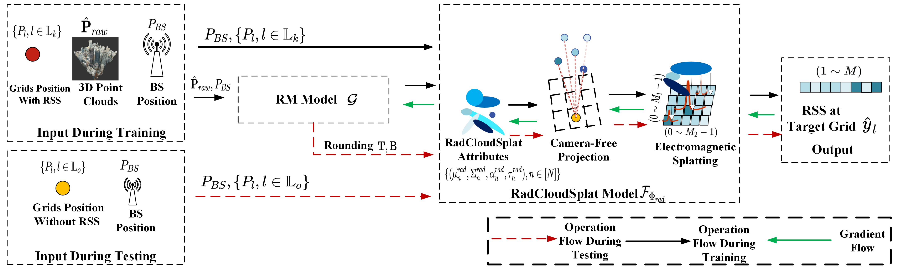

Scatterer-Driven 3D Gaussian Splatting with Point-Cloud Priors for Radiomap Extrapolation
Radiomap represents the spatial distribution of wireless signal strength, critical for applications like network optimization and autonomous driving. However, constructing radiomap relies on measuring radio signal power across the entire system, which is costly in outdoor environments due to large network scales. We present RadSplatter, a framework that extends 3D Gaussian Splatting (3DGS) to radio frequencies for efficient and accurate radiomap extrapolation from sparse measurements. RadSplatter models environmental scatterers and radio paths using 3D Gaussians, capturing key factors of radio wave propagation. It employs a relaxed-mean (RM) scheme to reparameterize the positions of 3D Gaussians from noisy and dense 3D point clouds. A camera-free 3DGS-based projection is proposed to map 3D Gaussians onto 2D radio beam patterns. Furthermore, a regularized loss function and recursive fine-tuning using highly structured sparse measurements in real-world settings are applied to ensure robust generalization. Experiments on synthetic and real-world data show state-of-the-art extrapolation accuracy and execution speed.

| Method | MAE (dB) ↓ | Inference Time (s) |
|---|---|---|
| Kriging | 11.307 | 0.010 |
| VAE | 10.306 | 0.007 |
| NeRF² | 9.867 | 0.020 |
| RadCloudSplat (ours) | 7.564 | 0.004 |
| Method | MAE (dB) ↓ |
|---|---|
| RadCloudSplat (full) | 7.564 |
| Random-Points-Opt | 8.167 |
| Random-Initial-Opt | 10.463 |
| Random-Initial-Fixed | 53.234 |
| Method | MAE (dB) ↓ | Inference Time (s) |
|---|---|---|
| Kriging | 9.656 | 0.183 |
| VAE | 8.728 | 0.011 |
| NeRF² | 7.313 | 0.585 |
| RadCloudSplat (ours) | 7.035 | 0.018 |
In this work, we first extended 3DGS to the radio frequency domain, leveraging camera-free RadSplatter to extrapolate RSSs with high accuracy from sparse measurements in outdoor environments. By efficiently selecting the means of key virtual scatterers from dense point clouds aided by the RM parameterization model, the model captured intricate multi-path propagation characteristics. Experiments and analysis validated the effectiveness of these scatterers, advancing the state-of-the-art in wireless network modeling and extrapolation performance and highlighting the transformative potential of integrating advanced 3D modeling techniques with wireless propagation analysis for next-generation applications in the radio domain.
@inproceedings{wang2026radcloudsplat,
title={RadCloudSplat: Scatterer-Driven 3D Gaussian Splatting with Point-Cloud Priors for Radiomap Extrapolation},
author={Wang, Yiheng and Xue, Ye and Zhang, Shutao and Fan, Hongmiao and Chang, Tsung-Hui},
booktitle={IEEE INFOCOM 2026-IEEE Conference on Computer Communications},
pages={1--10},
year={2026},
organization={IEEE}
}
This work was accepted by IEEE INFOCOM 2026. We thank Dr. Xiaopeng Zhao and the authors of NeRF² for making their code and dataset available.